iMateGo
行動POS操作說明
iMateGo行動發票點餐系統說明手冊
壹·發票字軌取號
- 1
進入發票設定的頁面，點選『開始取號』，會產生一組發票號碼。（組數取決於當時加值平台的設定多寡)
- 2
點選『配號資訊』會顯示當期的發票配號資訊（圖中紅色方框）。
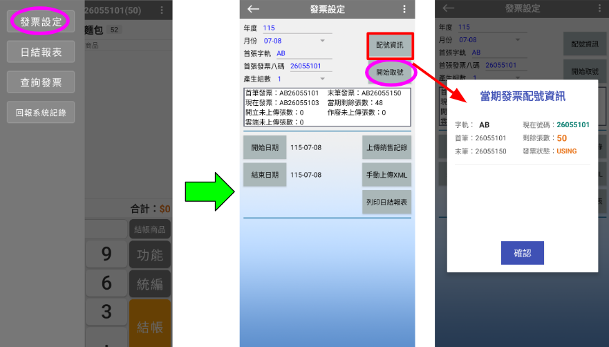
assets/images/發票字軌取號.png貳·匯入商品資料
- 1
進到營運管理平台( https://omp.imate.pro/login ）後點擊左側的『商品管理』，按一下左上角紫色的『商品範本』導出空白範本的xlsx檔案，下載後可以依照商品分類、項目及註記在此檔案上編輯。
- 2
菜單編輯完成後，接著點擊『批次導入』-->『選擇檔案』選擇編輯好的『商品範本』xlsx檔案後按「開始導入」。
- 3
完成商品導入後在「商品分類」(圖中紅色圈圈)中可以點擊『綁定商品』去選擇或搜尋商品去做綁定歸類在此分類。
- 4
完成所有商品綁定分類後，接著到「分類指派」(圖中橘色圈圈)
1. 選擇要指派的商品， 再選擇要讓這些商品同步到哪一台「POS機編號」。
2. 如果同一個統編（店）有兩台以上的POS機，就會出現兩個以上的編號 。假設要將商品同步到兩台以上的POS機，那記得都要點選到。
3. 選擇完畢後按下『儲存指派』即可同步。 - 5
回到POS機，將POS機結束程式再重新開啟程式，商品會自動同步。
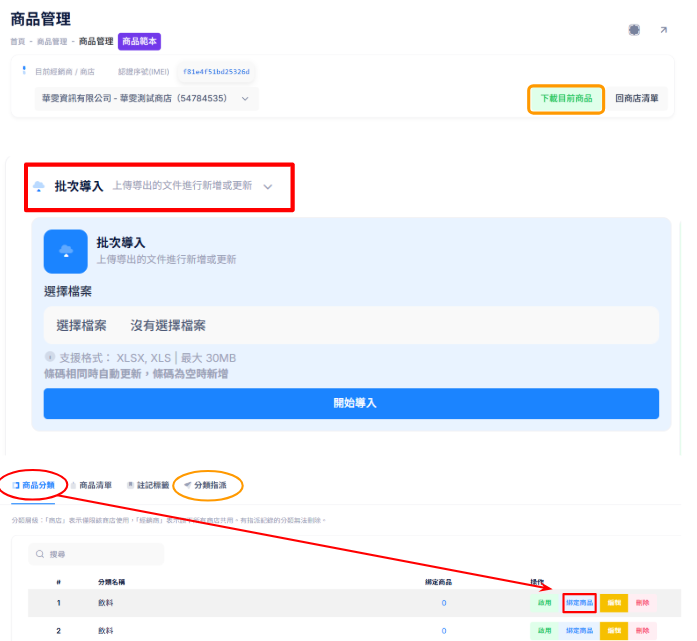
assets/images/02-download-template.png參·快速開發票
(一)一般商品結帳
- 1
藍色箭頭為商品分類，滑動進行點選。
- 2
商品可上下滑動，選擇商品後，點選備註。
- 3
商品確認無誤點擊『結帳』即可。
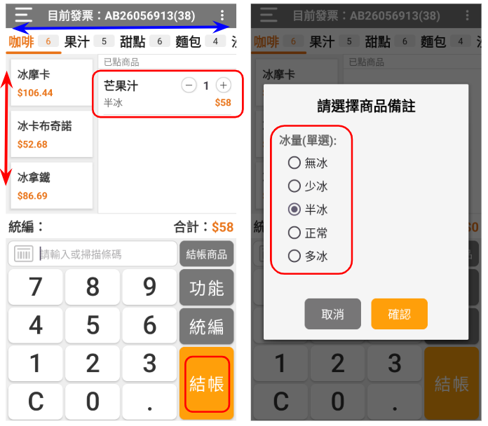
assets/images/06-product-checkout.png(二)價格優先結帳
- 1
先點數字鍵輸入金額，再點選商品。
- 2
點選「結帳」即完成作業。
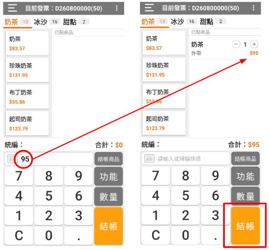
assets/images/07-price-first.png(三)自訂義商品結帳
- 1
點選商品觸發模式可以選擇要數量優先還是價格優先，而自定義商品是『價格優先』。
- 2
只需在主畫面輸入數字，直接著按「結帳」就可以直接開出自訂義商品的發票。
肆·銷售前台功能
(一)商品鍵入及修改、折扣
- 1
點選畫面鍵入 :
1. 選擇類別、商品、以及點選加購/註記 。
2. 鍵入後商品會出現在右半部，並且會出現商品的加購/註記 。
3. 商品確認無誤後按『結帳』即可。
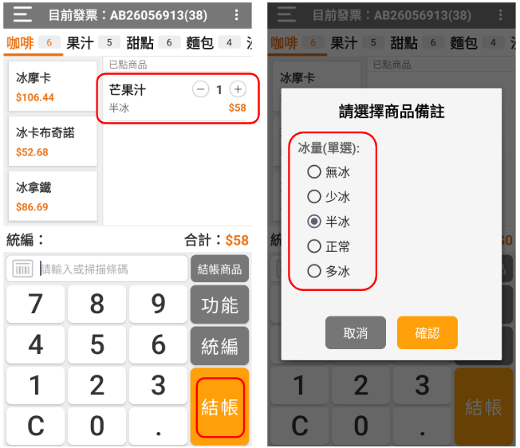
- 2
掃條碼鍵入 :
1. 使用內建的紅外線掃描器，可直接使用設備掃商品條碼進行結帳。
2. 若沒有紅外線掃碼設備，可點擊圖示會開啟相機，可用設備的內建相機掃條碼（速度較慢）。
3. 掃描時程式會查詢商品資料庫中的商品，有此商品則會顯示於清單中，如果沒有此商品則會顯示查無資料。（如果確定資料庫有此商品，掃描後顯示查無資料，重新掃描即可）
4. 如同一商品有多個，可先輸入數量再掃描條碼（「基本設定」處要設定「數量優先」）。
5. 商品掃描結束後確認清單內容，點選『結帳』即完成交易。
- 3
修改商品 :
1. 以鍵入的商品可以利用+/-去做修改數量。
2. 將商品往右滑可將單品刪除。
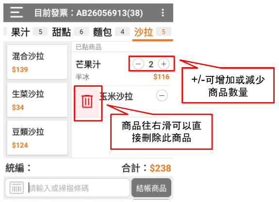
3. 修改註記內容，點一下該商品就可以直接修改。
4. 修改單價、數量，長按商品即可修改。
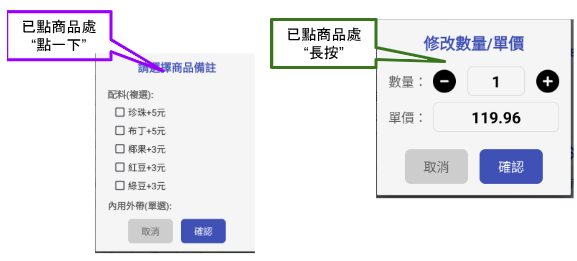
- 4
折扣設定 :
1. 先按數字再選「功能」列表中的「整單折扣」。
2. 畫面中就會顯示『應稅折扣』。
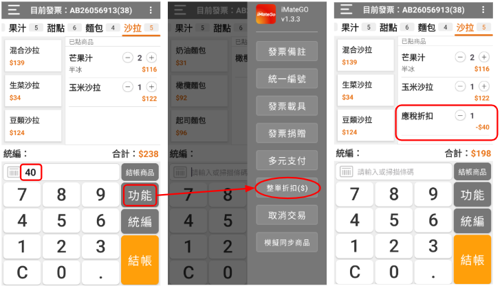
＊主畫面說明
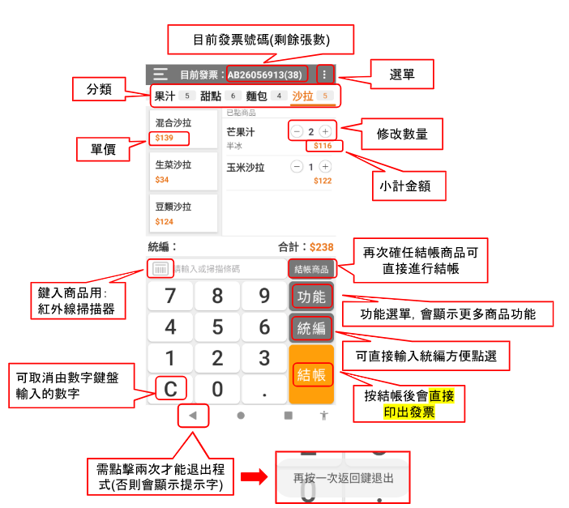
assets/images/08-add-edit-items.png(二)發票設定
- 1
點擊『功能』列表中的『統一編號』、『發票載具』及『發票捐贈』。
- 2
選擇要輸入的設定點開，並且輸入數字或點視窗中
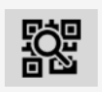
圖示，完成後就會出現以下樣式。
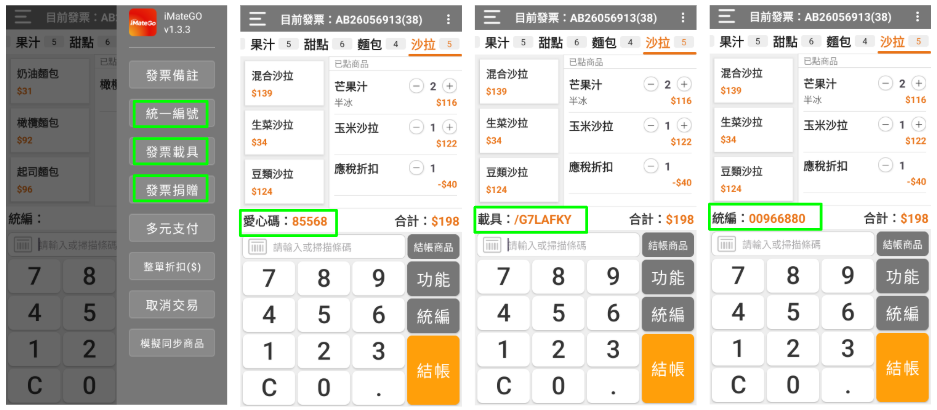
assets/images/10-invoice-options.png(三)多元支付
- 1
有串接NFC感應付款、掃碼支付的店家可使用多元支付功能。
- 2
點擊『功能』列表中的『多元支付』，畫面會自動跳到串接的支付聯卡感應收款平台。
- 3
操作完扣到款後會主動結帳印發票。
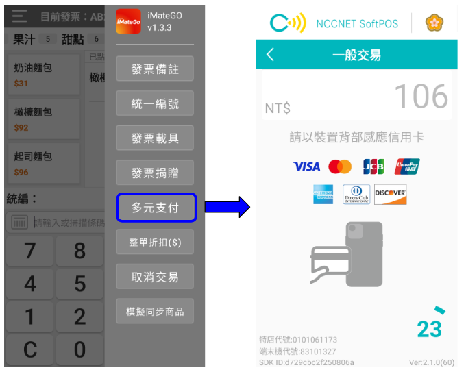
assets/images/11-payment.png(四)暫存掛單及載入掛單
- 1
如有單需稍後再付款可以點選功能列中的「暫存掛單」，商品會儲存到內；要付款時在點擊「載入掛單」就可以選擇要結帳的單。
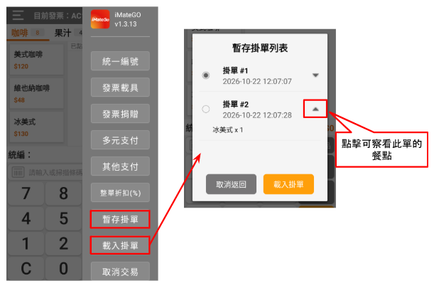
assets/images/11-payment.png(五)其他支付
- 1
提供其他付款方式，可自行定義名稱(現金、Line Pay)，但沒有串接支付商，如需串接支付功能請洽系統商申請。
- 2
請先於下方紅色框位置的數字鍵輸入金額後，點擊橘色框『功能』列表中的『其他支付』，選擇支付方式，按下確認結帳即可印出發票。
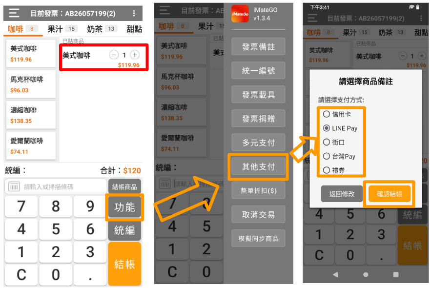
assets/images/11-payment.png(六)確認「結帳商品」功能
在設定好發票後，如不需用多元支付，可使用「結帳商品」功能，核對客人點餐內容，在小視窗「確認結帳」就會直接印發票。
- 1
點選「結帳商品」可看到已點的商品列表。
- 2
跟客人核對後，按下「確認結帳」會直接完成結帳，如發票未設定載具/統編/愛心碼者，需先完成設定，如果要使用多元支付者不適合用此功能。
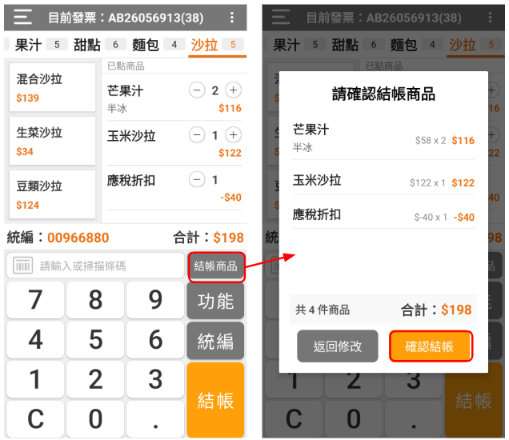
assets/images/12-review-checkout.png伍·設定說明
(一)「公司設定」說明
此頁的資料大多是雲端設定後，再次按「已完成認證」，可在次同步變更。
- 1
設定發票抬頭：於「發票LOGO」處，鍵入要顯示於發票抬頭的文字，如有上傳圖片者，需於此輸入大寫英文「IMAGE」，即可顯示於抬頭。
(二)「基本設定」功能說明
- 1
點擊主畫面右上角的三點，選擇『基本設定』。設定說明如下圖。
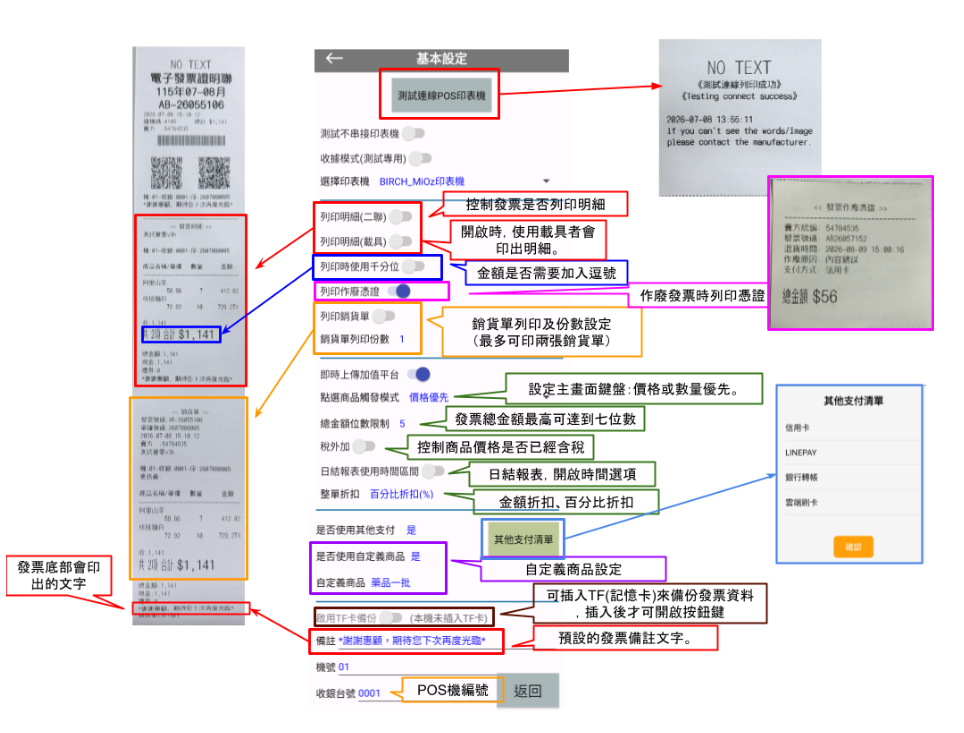
assets/images/13-company-settings.png- 2
發票備註說明：基本設定中「備註」，設定後會顯示在前台，畫面如下圖中的「請輸入發票備註」內容會成為預設，無另外修改就會印出字樣。
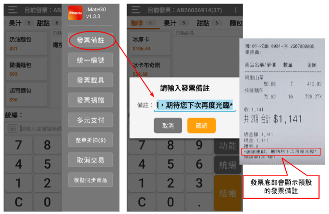
assets/images/發票備註功能.png(三)「出單機設定」說明
- 1
「使用本機印表機」：下圖紅色框，開啟時印完發票後會於本機列廚房單。 成功後返回主畫面點選菜單，選擇完畢結帳後會出現提示字，『需先手動將發票撕下』按確認後才會繼續出廚房單。
- 2
「使用廚房印表機」：下圖橘框，可串接其他印表機列印廚房單，最多可串接三台，開啟後，輸入印表機IP、Port(9100)，即可測試連線列印。
- 3
「使用廚房印表機」：下圖紫色框，可串接標籤印表機，列印杯貼，最多可串接三台，開啟後，輸入印表機IP、Port(9100)，即可測試連線列印。
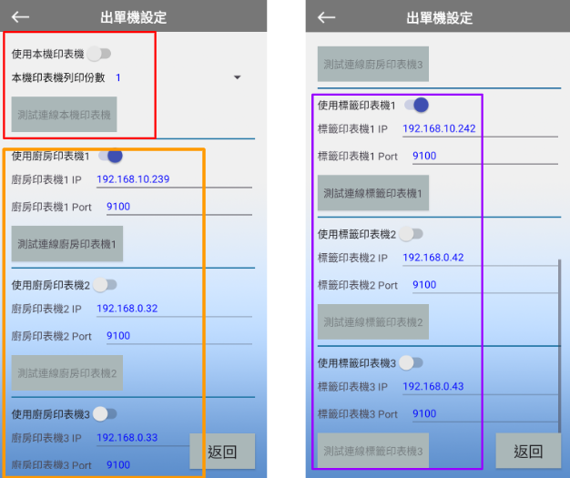
assets/images/15-printer-settings.png陸·作廢、補印、作廢註銷
(一)作廢
- 1
點左側選單進入『查詢發票』頁面。
- 2
利用左右箭頭選擇或是搜尋欲退貨的發票後，可以自行選擇要退貨的項目，選擇完畢後後點「作廢」。
- 3
如是部分作廢者，作廢後會主動再印一張，沒有作廢的商品的發票。
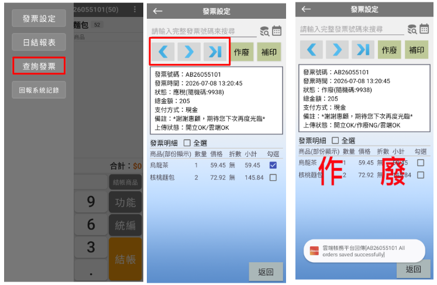
assets/images/16-void-invoice.png(二)補印
- 1
找到須補印發票號碼後，點選「補印」。
- 2
發票補印出來後，紙本上會顯示此發票為補印，時間也會顯示補印時間。
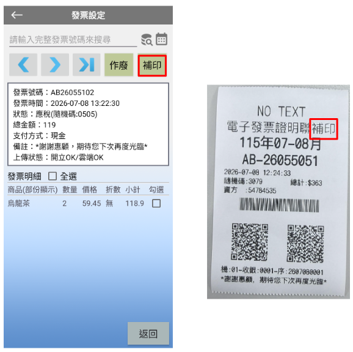
assets/images/17-reprint-invoice.png(三)作廢註銷
- 1
此功能是將已作廢的發票取消作廢。需於發票作廢後十分鐘才能執行「作廢註銷」的功能。
- 2
先找到要作廢註銷的發票號碼後，按右上角的三個點，會看到作廢註銷，點入後會有提示訊息，接著輸入密碼：當天的西元年減月減日，即完成作廢註銷。（如下圖）
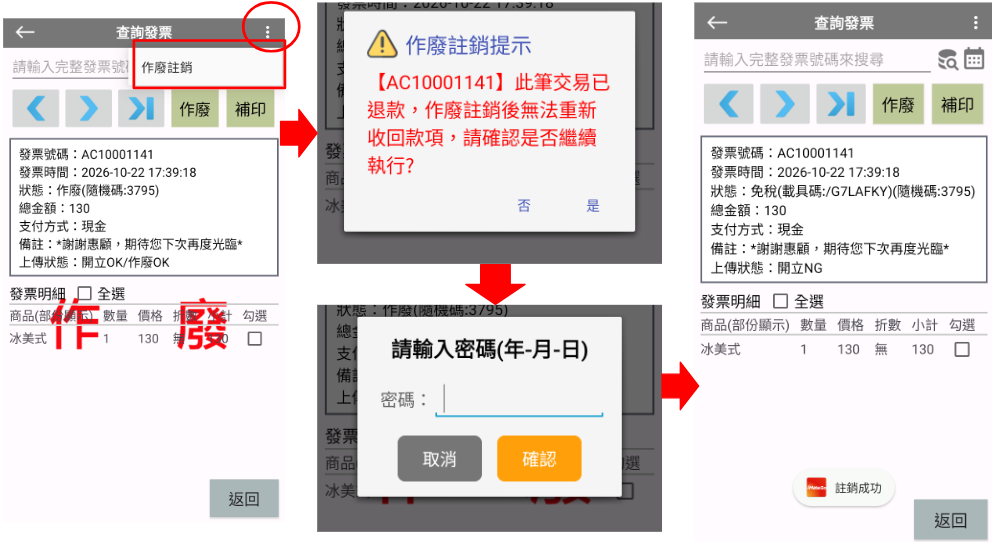
assets/images/18-reverse-void.png柒·報表
(一)匯出銷售紀錄
- 1
選單進入『發票設定』，點選『上傳銷售紀錄』。
- 2
如需下載多日銷售紀錄，也可選擇『開始日期』與『結束日期』再做匯出。
- 3
當次匯出總金額會同步顯示於畫面中，可供對帳用。
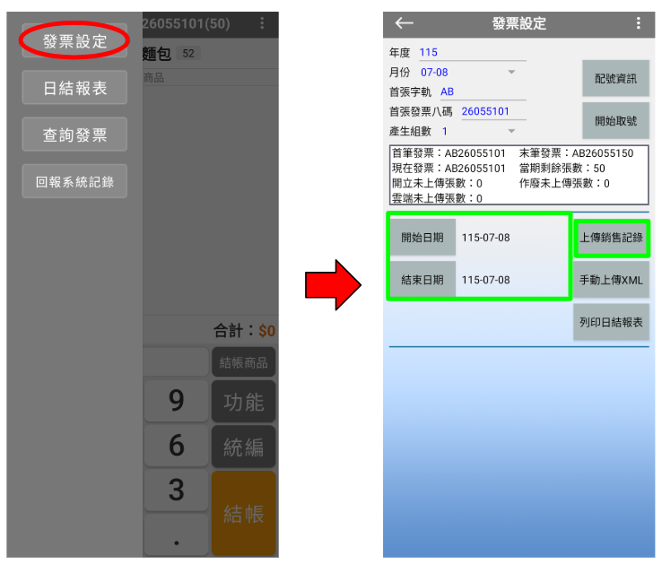
assets/images/19-export-records.png(二)列印日結報表
- 1
左側欄位選單進入『發票設定』，點選『列印日結報表』即可列印出來。
- 2
如需彙整多日銷售報表，也可選擇『開始日期』與『結束日期』再點選『列印日結報表』。
- 3
點擊左側欄位的『日結報表』也可以做匯出。
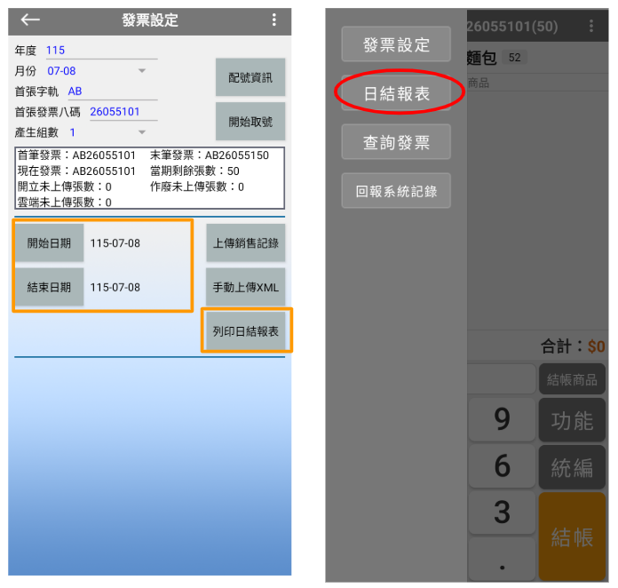
assets/images/20-daily-report.png捌·回報系統紀錄
- 1
點擊左上選單後點選『回報系統紀錄』。
- 2
或於「發票設定」頁面右上角三個點點，中點選「回報系統紀錄」。
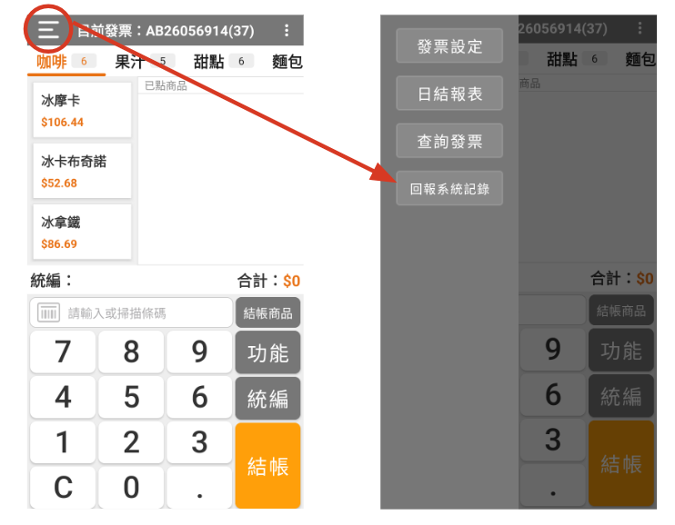
assets/images/21-report-logs.png玖·軟體更新
- 1
先點選主畫面右上角的三個點點進入『公司設定』。
- 2
進到畫面後點擊右上角的『軟體更新』，接著會陸續跳出提示訊息引導安裝。
- 3
當跳出安全防護時點擊「更多詳情」後會出現「不掃描就安裝」，按此下載。
- 4
完成安裝。
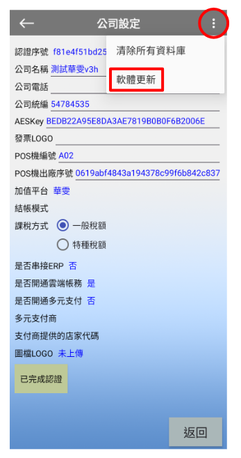
assets/images/22-update-app.png拾·營運管理平台說明
(一)密碼修改、忘記密碼、帳號鎖定
1. 修改密碼：營運管理平台( https://omp.imate.pro/login)，第一次登入後請於右上角的「個人資料」中更改密碼，（如下圖）
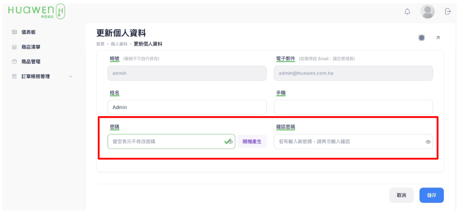
assets/images/23-account-security.png2. 忘記密碼：如忘記密碼可輸入此帳號綁定的Email收信，修改密碼。
3.帳號鎖定：密碼輸入錯誤達五次後，帳號即被鎖定，需輸入此帳號綁定的Email，通知解鎖。
(二)商品管理
如需修改、新增商品，可用以下兩個方式處理。
- 1
匯入商品：請點選「下載目前商品」的檔案做新增編輯之後，上傳並設定分類及指派。
- 2
手動新增，點選右邊藍色的按鈕，
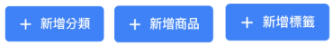
，之後綁定商品、標籤，最後完成分類指派。
＊如是手動鍵入的商品，建議完成新增/修改後，再下載一次「下載目前商品」儲存此檔案備用。
- 1
綁定分類:
1. 在商品分類中找尋要綁定的類別後點擊右側的「綁定商品」。
2. 跳出畫面後可勾選或查詢欲綁定的商品，選擇完畢後點擊右下角的「確認綁定」即可。
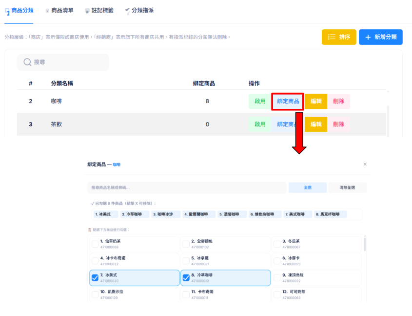
assets/images/綁定分類.png- 2
分類指派:
1. 在指派設定中先選擇好要綁定的POS機編號。
2. 勾選要綁定的類別後按「儲存指派」即可。
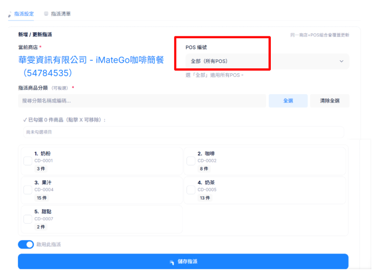
assets/images/分類指派.png3. 排序：「商品分類」「商品清單」「註記標籤」，的頁面中，都有黃色的
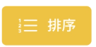
，點選後，直接用游標拖拉要排序的順序即可。(三)訂單帳務管理
提供六項報表「營業匯總表」、「商品銷售排行」、「結帳時段統計」、「交易明細統計」、「訂單商品明細」、「營業報表」查詢，可自行選擇日期區間，查詢並匯出報表。
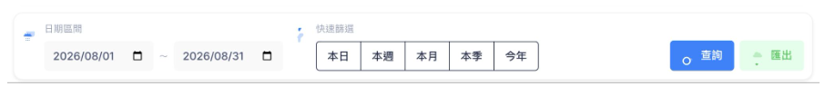
assets/images/訂單帳務管理.png(四)商店功能設定
提供「離線付款方式」以及「自訂品項」，商店清單中找到自己的商店在右側按下設定，預設皆為停用需自行啟用(紅色框)。「離線付款方式」啟用後即可設定付款方式，按住左側的 ⋮ 圖示可自行調整順序(藍色框) ，請注意如付款方式無需使用關掉即可(橘色框)，若該付款方式已有銷售則無法刪除。「自訂品項」啟用後即可鍵入但只能輸入一樣。兩個設定有更動皆需要關掉程式重啟。
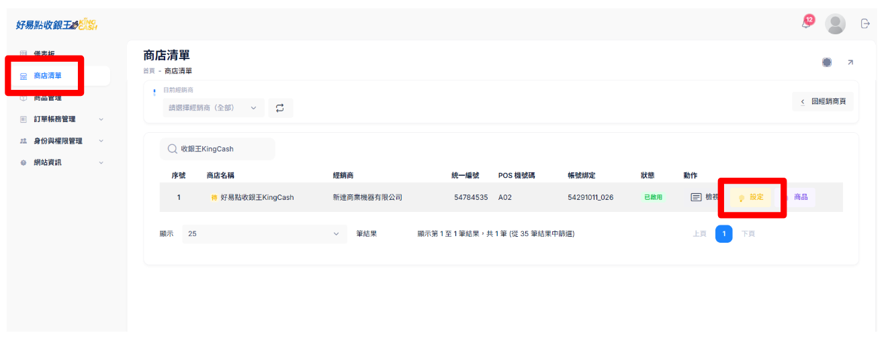
assets/images/商店功能設定.png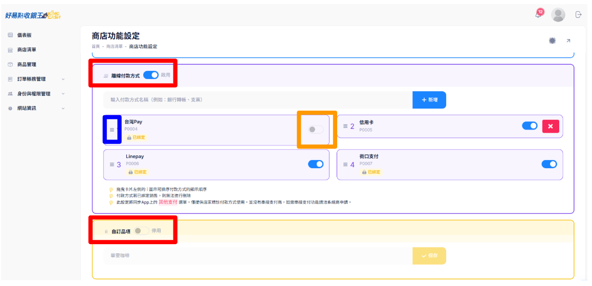
assets/images/商店功能設定(離線支付).png拾壹·疑難排除
(一)維護發票資料
當發票使用完畢再次取號後回到主畫面依舊是0張發票，但事實上已經取好了，處理此問題時可參考以下作法 :
- 1
點擊「發票設定」中右上角的三個點點，點選「維護發票資料」，它會處理最近一次的問題排除，點擊後就可以正常開立發票了。
- 2
將頁面整個滑掉在重新開啟一次重新整理頁面，也可以正常開立發票。
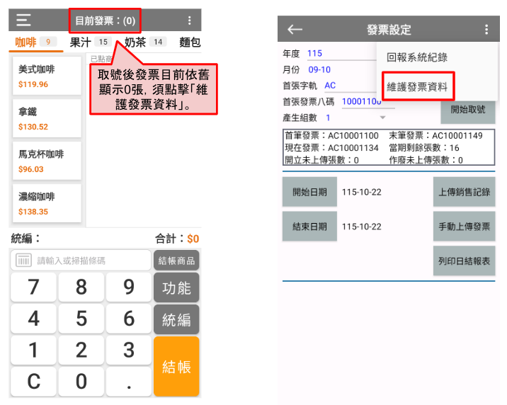
assets/images/維護發票資料.png(二)手動上傳發票
- 1
如果在沒有網路的情況下開立發票是無法自動上傳發票的，需等連接網路時到發票設定中點擊「手動上傳發票」，將發票上傳至票中心。
- 2
如果需要上傳有區間段的發票，可以選擇日期並且長按「手動上傳發票」即可。
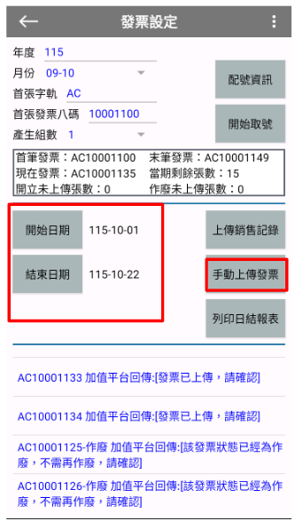
assets/images/手動上傳發票.png找不到符合的章節
請試試其他關鍵字，或清除搜尋以查看完整手冊。